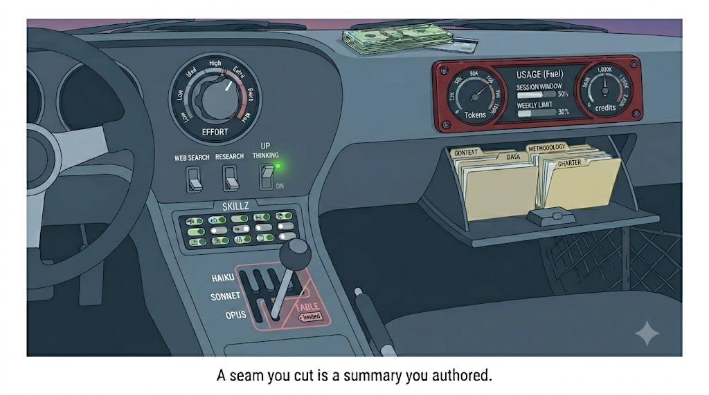
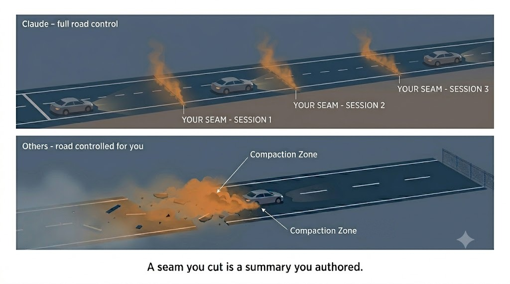

Most chat tools are automatics. They do the ordinary jobs well, keep the risky controls out of reach, and they won’t let you stall. For most people, most of the time, that’s the right car.
Long-running work is where this gets unglued.
The kind of work I’m talking about is research and writing that builds over days or weeks — accumulating sources, developing ideas, moving from rough thinking to something you’d actually publish. Not a single task you hand off and collect. A project.
In most tools, that project ends the same way. The wheels start to slip in the turns. The engine misfires. I find myself covering ground I already covered — same problem, same dead ends. So I pull the draft to a separate document and finish it by hand. Claude is more resilient, but it can end up in the same pattern if you haven’t learned to drive it.
Most of what gets written about Claude is aimed at developers — token budgets, prompt caching, agent orchestration. Not much help if you’re doing research and writing.
What drew me to Claude was simple: it reasons better. It produces a clean diagram. It formats a document well enough that I’m not spending hours cleaning up drafts before I can share them. Real advantages, and they come with a real catch.
The capability is metered. Every plan runs on a usage window, and the strongest setup drains it fastest. At first that felt like a cost problem. It isn’t. It’s a design constraint that turns out to be a feature — it forces you to make choices about your work that make you a better driver.
Claude was demanding I learn to drive. Once I did, everything changed.
If you work the way I do — long research, multi-session writing, an LLM alongside you the whole way — this paper is the foundation. It covers the ideas you need to understand. Paper Two is the framework I built to put them to work.

The first move isn’t picking a model. It’s assessing the work in front of you — how complex is it, how much genuine uncertainty does it carry, does it need open-ended judgment or defined execution against a settled plan — and matching that to what you can afford. Model, effort, and context are how you spend.
Working in Claude for hours at a stretch means working within a budget. You’re not billed per token unless you buy additional credits, but you do have a rolling session window and a weekly limit, and both draw down as you work. Burning through either means stopping early.
The right model depends on the work. Deep reasoning and open-ended judgment go to the strongest model. Defined execution — drafting from a settled outline, producing from a spec — goes to the fastest capable one. Right now that means Opus to frame and synthesize, Sonnet to draft and produce, Haiku for the lightweight tasks.
My own path wasn’t clean. I defaulted to Opus because it handled everything. Then Anthropic released a new version and the token usage doubled overnight. I was burning through my session window in two hours instead of five, and just staying on the latest model was no longer a cost I could absorb. When I shifted to Opus for the framing work and Sonnet for execution, I got the same quality at half the cost — and kept working longer on the same plan.
As I came to the final draft of this paper, I shifted from Opus to Sonnet Max and turned off Claude’s extended thinking mode. The ideas were settled — I didn’t need deep reasoning pulling in bigger questions from the project. I needed clean, fast prose work, section by section. Sonnet is better at that. Turning off thinking kept it focused on the writing in front of it rather than re-examining the architecture behind it. And it iterates faster, which is exactly what you want in a drafting pass.
One thing I almost never do: switch models mid-thread. Bringing a new model into a long thread is like bringing a new person into a meeting that’s been running for two hours. They need to catch up, and the thinking gets inconsistent while they do. If I need to switch, I’d rather start a fresh thread than try to hand off mid-stream.
Context is the other half of the equation. It determines what the model is actually working with — what facts it holds, what decisions it remembers, how much of your work is live in the thread.
Something shifted here while I was writing this paper. Claude used to hold your entire thread, word for word, until you hit a hard stop. Now the stop is softer. When a thread gets near the context limit, Claude summarizes the early material and keeps going — and it marks the spot when it does. Everything below that line is still held in full.
The other tools I’ve used do something different. They trim and compress continuously as the thread grows, and you find out what fell off when the model forgets it. With Claude you can see what the model is holding, because below the compression line, it’s holding all of it.
That difference matters because it means you can choose where the break happens and what survives it. A break you cut deliberately — carrying forward what you decided matters — produces better work than a break the system cut for you.
| Habit | The Hazard | The Protection | What it costs |
|---|---|---|---|
| Cut a clean break at every deliverable | You can’t see what’s been compressed or what the model is quietly working without. | You chose the break point and what carries forward. Fresh context, full picture. | Noticing when the thread is running long. Save the draft, open a fresh thread, carry the file forward. |
| Close with a handoff note | The model drifts — logic gets fuzzy, focus slips, earlier decisions lose weight. | The next session opens on a few pages of full continuity instead of a hundred-thousand-token thread. | Ten minutes at session close. Let Claude draft it from your open items and next step. |
| Load only what the thread needs | More context feels like richer work. It isn’t — it’s a slower, shorter thread on diluted material. | The model holds exactly what you want it thinking about. The thread runs longer and the work stays sharper. | Deciding what context each task actually needs before you load it. |
These habits pay off on work that builds over time. For a one-off question, skip them and just pick the right model for the task.

Managing context, breaking work across threads, writing a handoff note at the end of a session — that’s real work. Worth asking honestly whether it pays.
Working through multiple drafts and iterations with a model that isn’t losing the thread — isn’t quietly forgetting earlier decisions or drifting from the original problem — produces better work. That part is straightforward.
The thing that’s hard to see until you’ve lived it: when I write two thousand words the usual way, I get attached to the sentences. Tearing the structure down means rewriting all of them, so I defend what I have instead of improving it. When Claude holds the draft, the sentences stop being the investment. The ideas are the investment — what the piece argues, how it’s ordered, what it’s built to do. Those survive any rewrite. The prose is just the cheap layer, regenerated from the thinking you already banked. You can reshape the whole thing with a few prompts and feel nothing, because nothing you actually valued got destroyed.
Claude is a raw tool. Powerful, but raw. A software engineer has an IDE — one place that holds everything, tracks every change, keeps the project coherent across sessions. Nothing like that exists for knowledge work. So you assemble it yourself.
That assembly is what Paper Two is about.
For each paper I create a separate Claude Project. The project instructions guide and track the work — what I’m building, what’s been decided, where I am in the process. I maintain a set of reference documents in Google Drive that travel with the project: research I’ve accumulated, frameworks I’ve developed, decisions I’ve locked. And I use the three habits in the table above consistently. Every paper I’ve written in the past several months was built this way and the framework has evolved throughout.
It’s built entirely on native Claude features. Nothing exotic — just Project instructions, context discipline, and a handful of habits applied consistently. Together they get closer to a knowledge worker’s IDE than anything else I’ve found.
Paper Two covers the framework in full:
If you’ve read this far, I assume you’re trying to solve the same problems I was.
Get in the driver’s seat — the next paper takes you much further down far trickier roads.
claude-guide/.